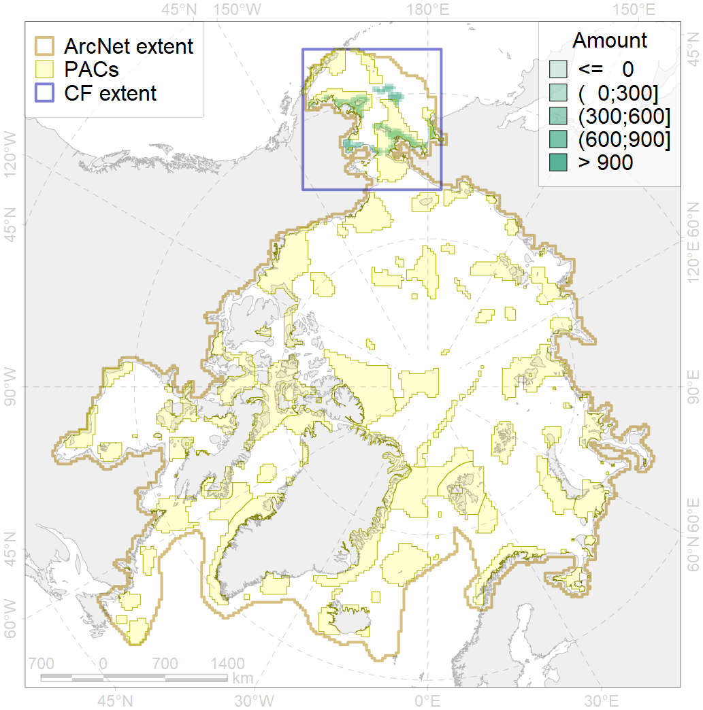
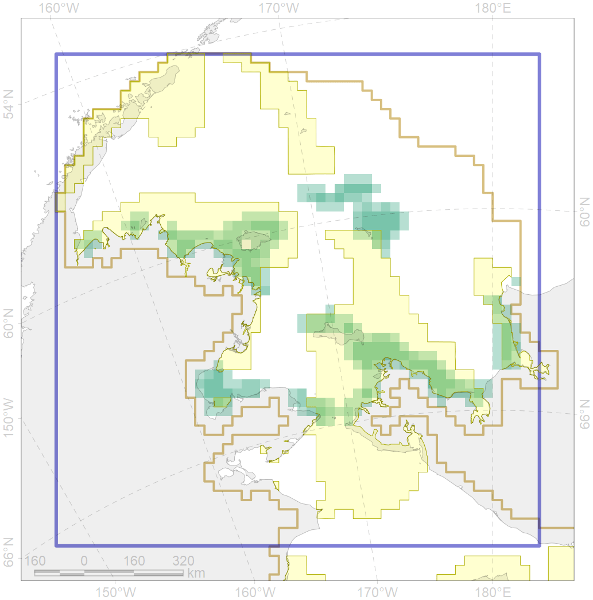

2058

| CF ID | 2058 |
| CF Name | Bearded seal whelping areas in the Bering Sea as predicted by MIZ distribution |
| Time Period | 1979-2017 |
| Source(s) | Trukhanova; Platonov (MIZ data); Chernook et al 2018 |
| Seasonality | March-June |
| Depth Horizon | 0-200m |
| Methodology | Expert input; surrogate data; data compilation |
| Author Name | Irina Trukhanova |
| Notes | |
| Conservation Target Set in the Scenario | 0.24 |
| Conservation Target Achieved in the Scenario | 0.676 (Scenario: 281.6%) |
| PAC ID | Proportion in the PAC | Contribution to ArcNet Target Achievement | PAC’s Contribution to the Achieved Target |
|---|---|---|---|
| 3 | 28.4% | 108.0% | 38.4% |
| 4 | 6.0% | 16.3% | 5.8% |
| 5 | 36.2% | 148.0% | 52.6% |
| inner | 70.6% | 272.3% | 96.7% |
| outer | 29.4% | 9.3% | 3.3% |